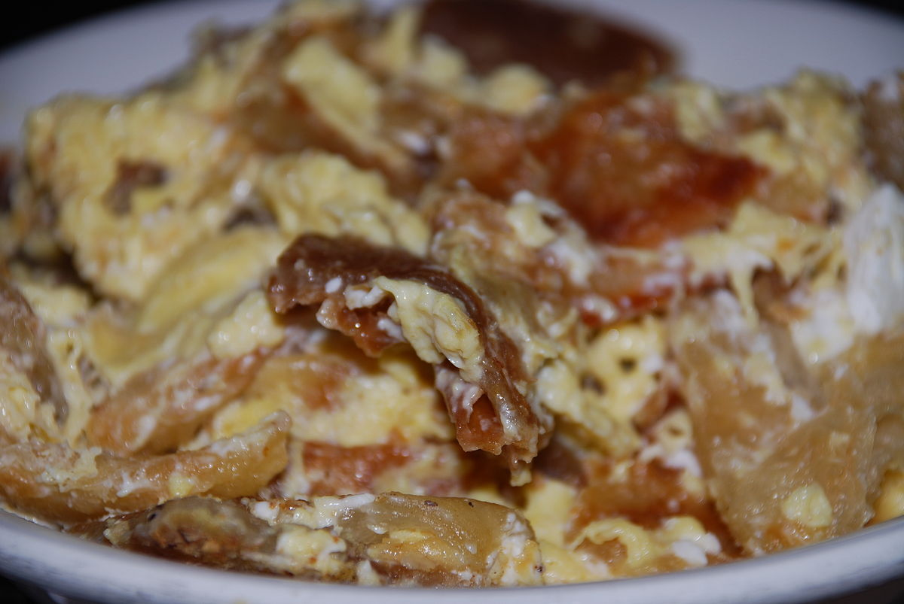

____
Традиционная еда
Салюф (Ṣalūf) — лепешка из пшеничной муки, самая распространенная из всех хлебных изделий в йеменской кухне. Тесто сначала заквашивали при помощи специальной закваски (ḫamīrah) либо при помощи пажитника (ḥilba), а затем выпекали в глиняной печи табун (taboon).
Тава (Tawa) — лепешка, выпекаемая на специальной плоской сковороде, которая и называется тава.
Тарид (Tharid) — традиционное арабское блюдо, приготовленное из кусочков хлеба в овощном или мясном бульоне. Его обычно едят в священный месяц Рамадан.
Салтах (Saltah) — йеменский национальный суп, в основе которого коричневое мясное рагу (maraq), пажитник, схуг (соус из перца чили, помидоров, чеснока и трав). Рис, картофель, омлет и овощи являются обычным дополнением к супу салтах. Традиционно его едят с плоской йеменской лепешкой, которую используют для зачерп.
Аседа (Aseedah) — дно из основных блюд в Йемене, обычно подается на обед или ужин.
Фатут (Fatoot) — ещё одно йеменское блюдо для завтрака на основе измельченного хлеба.

____